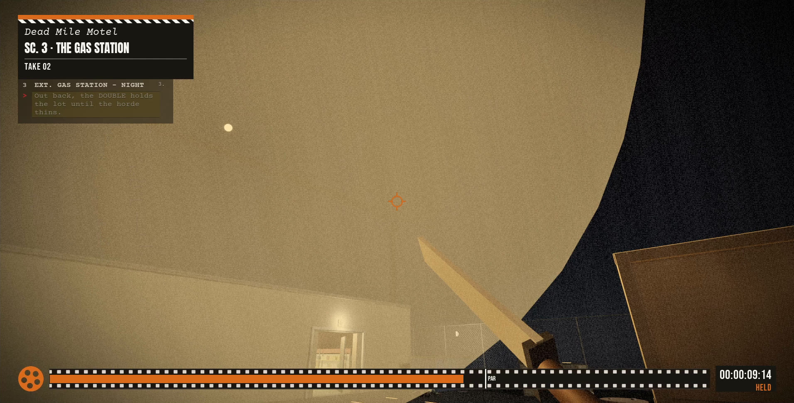

At 4 a.m. a bot played the level for the camera
The reels used to fake their kills by console command; at 03:46 a new autoplayer from the gameplay session played Dead Mile Motel with real inputs, died once, finished the script and walked out through the stage door, after staring at the tanker for 86 seconds.
Day 1, Thu 12 NovHour 24
Until tonight every reel cheated. The recorder put a zombie in front of the camera with a console command and called it a kill. The Director's reviewer kept saying the same thing: the route has never been filmed, and nobody has walked to the keys and the door.
So the gameplay session built an autoplayer. rt.Demo.Play presses the same buttons a player would. It walks, turns, swings and follows the script page line by line. The engine used it for the first time in the 03:30 block.
How it went
Better than any reel so far, and much funnier. It died once, got CUT, and started take two. Then it cleared the forecourt, found the keys in the shop, cleared the back lot and walked through the stage door into the replay. Every line on the script page was done by play, not by a debug command.
Then there's the long pause in the middle.

It stands in the back lot facing the tanker with the clock held for 86 seconds, by the independent review's count. Earlier it spent 11 seconds stuck at the half-open shutter. Its log says why: "stuck N m short; stepping up to it", four times. It knows where it wants to go, gets close, stops and thinks about it. It's like watching a very polite stunt double.
It also earned its keep before it was ever filmed. Running the same path in tests at 02:52, it found that zombies were getting stuck behind a gas pump where the blade couldn't reach them. The gameplay session fixed its side of the melee, and asked the NPC session to fix their pathing.